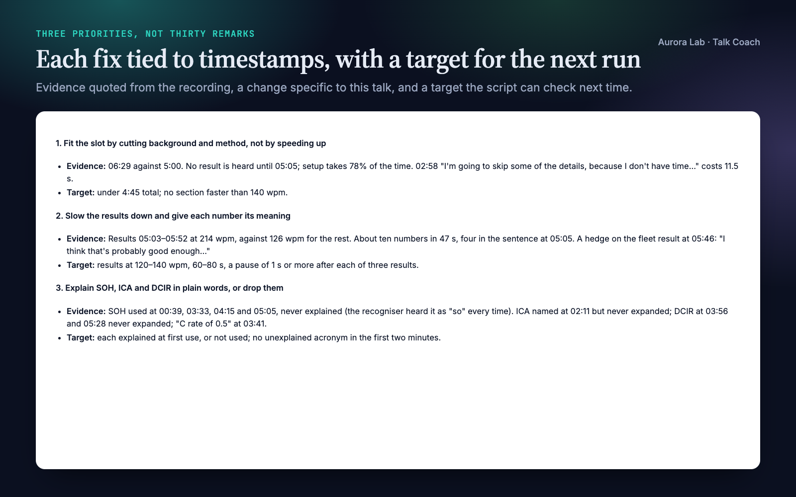
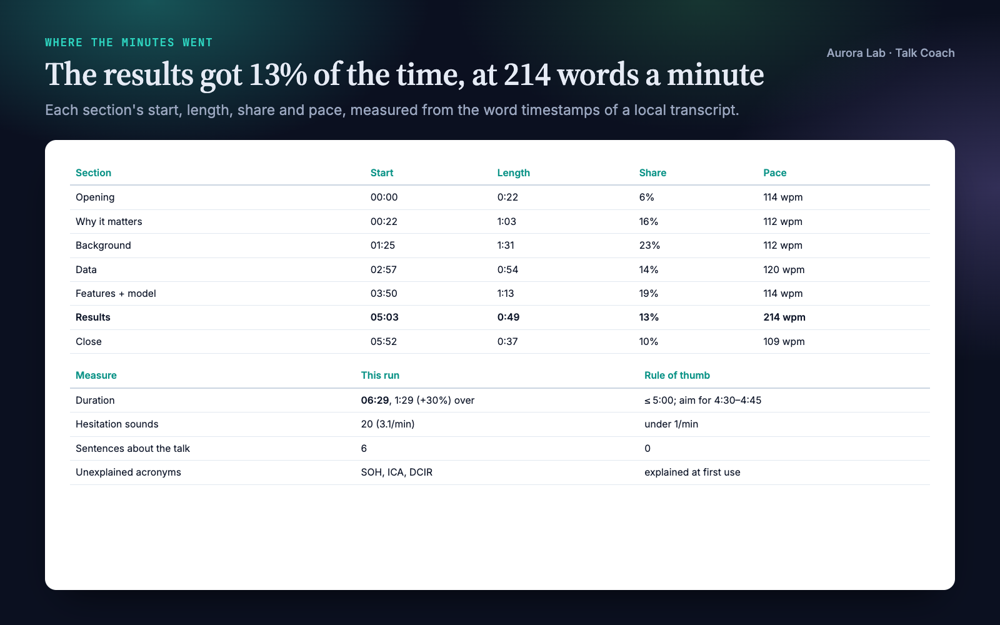
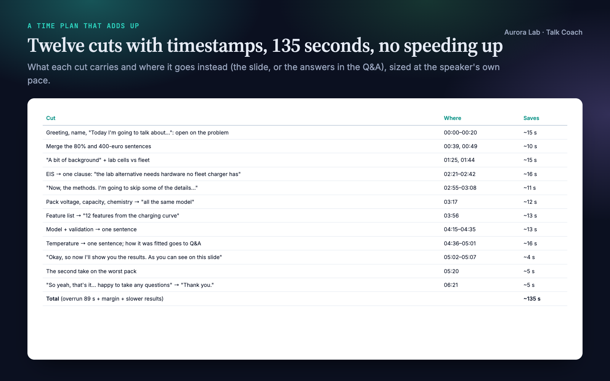
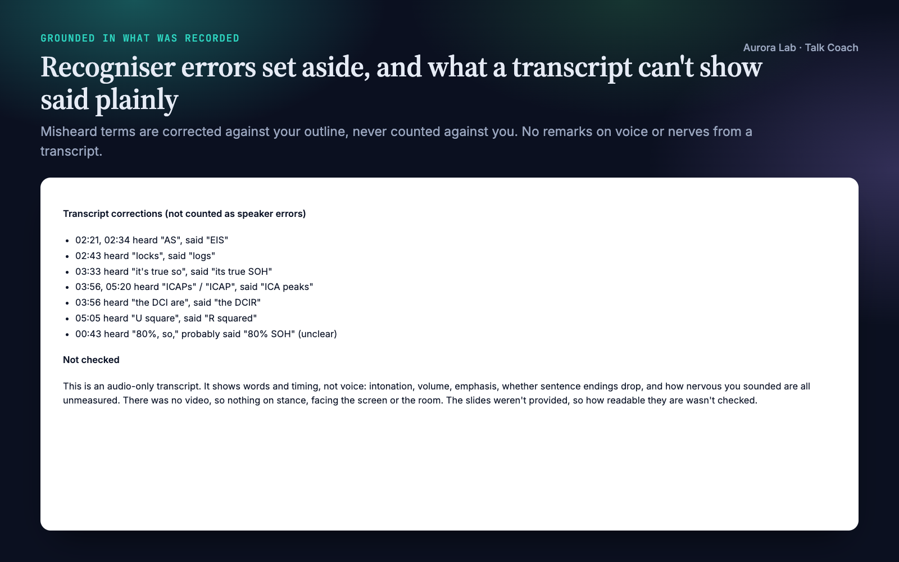
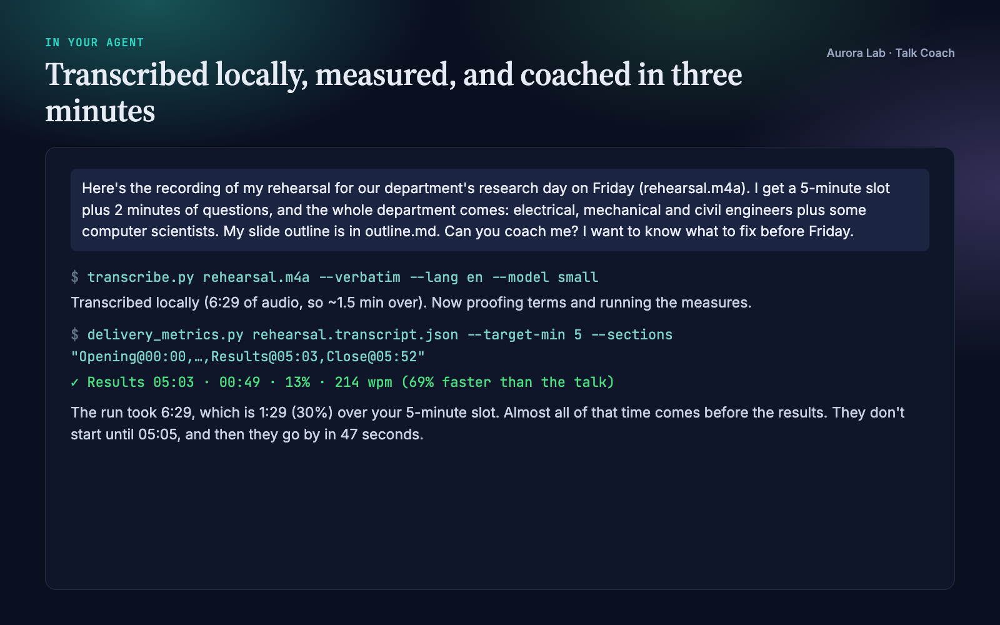

Overview
You can't hear your own rehearsal the way the room will. You know the results too well to notice they went past at twice the speed of the rest, you know what SOH means, and the minute you ran over felt like twenty seconds. Talk Coach turns a rehearsal recording into feedback you can act on before the next run-through.
- Where the minutes went. Time against your slot, and each section's length, share and pace, so a rushed results section or a methods section that ate the talk shows up as numbers with timestamps.
- A cut list that adds up. When you're over, concrete passages to cut, each with its timestamp and the seconds it saves, totalling the overrun plus a margin. Never "speak faster".
- The talk as your audience hears it. When the main message is first said, which terms and acronyms are never explained for this audience, how many numbers come in one breath, whether the last sentence before the thanks is your take-home.
- The verbal habits, counted. Hesitation sounds, filler phrases in context, sentences about the talk ("now I'll show you the results"), hedges on the main result, each with its timestamp.
- Three priorities, not thirty remarks. Each with the evidence, the change, a drill and a target the next rehearsal can be measured against. Rerun on the next recording and compare.
- Feedback grounded in what was recorded. Every point quotes the transcript with a timestamp. Recogniser errors are separated from your errors, and nothing is said about your voice or confidence that a transcript can't show.
Pairs well with: Q&A Prep, Poster Layout and other talk skills. None is needed.
Quick start
- Get the skill from Agensi and add it to your agent (Claude Code, Codex CLI, Cursor, Gemini CLI or any agent that loads SKILL.md skills).
- Have Python 3.10+. To transcribe recordings, install a local Whisper into your project's environment, for example
python -m pip install faster-whisper "av<19"(macOS, Linux, Windows), plus ffmpeg. No recogniser? Captions from Zoom, Teams, Meet or YouTube work instead. - Record a rehearsal (phone, laptop, a one-person video call) and tell your agent the time limit and who will be in the room.
Example requests:
- "Here's my rehearsal recording (rehearsal.m4a). I have a 12-minute slot at a conference next week. Coach me."
- "My job talk is 45 minutes plus questions; here's the Zoom recording of my practice run. Where do I lose time, and what should I fix first?"
- "I only have the transcript from Teams (practice.vtt), and my defence presentation must be 20 minutes. What's over, and what should I cut?"
- "Second run-through attached. Compare it with last week's metrics."
Want to try it without recording anything? The skill ships a made-up rehearsal as captions, its outline, and the feedback a real run produced, in examples/.
What you get
Everything below comes from one real run: a fresh agent session with only this skill installed, given the request shown in the last image ($0.59, about three minutes including transcription). The rehearsal was ours: a made-up five-minute research-day talk on predicting e-bike battery health from one overnight charge, spoken by a computer voice from a script we wrote, plus the speaker's slide outline. We planted the usual rehearsal problems: a talk 30% over its slot, a results section spoken at about twice the pace of the rest, SOH, ICA and DCIR never explained to a mixed department audience, about three hesitations a minute, and an opening and close spent on housekeeping.
The run transcribed the recording locally (faster-whisper, small) and found all of them. It mapped the outline's sections onto the recording, measured them, read the talk for terms, numbers and the close, and wrote twelve timed cuts adding up to 135 seconds, three priorities with drills and targets, and the command to compare the next rehearsal. It listed ten recogniser errors, such as "AS" for EIS and "U square" for R squared, as corrections rather than speaker mistakes, and said plainly that voice, body language and slides were not assessed.





How it works
- Collect. The recording or transcript, the time limit, the setting and audience, the outline or slides if any, and earlier rehearsal metrics.
- Timed transcript. Transcribed locally with word timestamps, keeping the fillers recognisers usually drop. Or imported from captions or text.
- Proof. The transcript is read against your outline; misheard terms are listed and corrected for, never counted as your mistakes.
- Sections. Each section of the outline gets its start time in the recording.
- Measure. The bundled script: time against the slot, pace overall, over time and per section, pauses, hesitations, filler phrases in context, sentences about the talk, hedges, acronyms and whether they were expanded, opening and closing words.
- Listen as the audience. One read for the point, the terms, the results, the signposting and the close, each finding with a timestamp and a quote.
- Video stills (video only). Stance, position, facing the audience: only what stills can show.
- Time plan. A cut list that adds up, or what to do with spare time; section balance against what the talk is for.
- Three priorities. Evidence, change, drill, and a target the script can check next time.
- Feedback file. What already works, the measures, the priorities, the cut list, transcript corrections, and what wasn't checked.
What each input can show
| Input | Measured | Not measured |
|---|---|---|
| Recording, transcribed locally | words, timing per section, pace over time, pauses, fillers, structure, terms | voice, intonation, volume, emphasis |
| Captions (.vtt, .srt) | the same, with pace to within a caption | pauses inside a caption |
| Plain text | fillers, terms, structure; pace if you give the length | timing per section, pauses |
| Video stills | stance, position, facing the audience, framing online | gestures in motion |
Transcription
| Recogniser | Install | Runs on |
|---|---|---|
| faster-whisper (recommended) | pip install faster-whisper "av<19" |
macOS, Linux, Windows; CPU or NVIDIA GPU |
| mlx-whisper | pip install mlx-whisper |
Apple Silicon Macs (fastest there) |
| openai-whisper | pip install openai-whisper |
any OS, needs PyTorch |
| whisper.cpp | a whisper-cli build plus a model file |
any OS, no Python packages |
The default model, small, is a 0.5 GB download on first use; on our Apple Silicon laptop it transcribed a 6.5-minute rehearsal in 46 seconds (base: 145 MB, 17 seconds). Larger models make fewer errors on field terms. Cloud transcription (Groq, OpenAI) is available but only when you ask for it, since it uploads the recording.
Helper scripts
All need Python 3.10+; only transcription needs extra packages.
| Script | What it does |
|---|---|
transcribe.py |
Recording (audio or video) to a word-timestamped transcript (.json and a readable .txt), locally; --verbatim keeps fillers. |
import_transcript.py |
Captions (.vtt, .srt), timestamped text or plain text to the same format; --speaker keeps one speaker. |
delivery_metrics.py |
The measures, with timestamps; --sections for per-section timing, --target-min for the slot, --json/--compare for reruns. Standard library only. |
Files it reads and writes
| File | Read or written |
|---|---|
| Your recording or transcript, outline or slides | Read. Never edited. |
<name>.transcript.json, <name>.transcript.txt |
Written: the timed transcript. |
<name>.metrics.md, <name>.metrics.json |
Written: the measures, and the numbers for the next comparison. |
talk-coach-<talk>-<date>.md |
Written: the feedback. |
research/talks/, research/claims.md |
Read when a research/ folder exists; outputs then go to research/talks/. |
| Video stills | Written to a temporary folder in the project and deleted at the end. |
FAQ
Which agents does it work with?
Any agent that loads SKILL.md skills and can run Python locally, including Claude Code, Codex CLI, Cursor and Gemini CLI.
Does my recording leave my computer?
Not by default. Transcription runs locally with a Whisper model on your machine; only the model itself is downloaded once. Cloud transcription (Groq or OpenAI) is available, but the agent uses it only if you ask, since it uploads the recording.
What do I need to install?
Python 3.10+, and for recordings one local speech recogniser, for example pip install faster-whisper "av<19" in your project's environment (macOS, Linux and Windows), plus ffmpeg. The skill's transcription guide gives the commands per system, the model sizes and what they cost in time. The measuring scripts themselves use only the standard library.
I can't install Whisper. Can I still use it?
Yes. Rehearse in a one-person Zoom, Teams or Meet call with transcription on, or upload to YouTube unlisted, and give the agent the captions (.vtt or .srt). Timing is then per caption, so section timing and pace still work; pauses inside a caption aren't measured. A plain-text transcript works too, for fillers, terms and structure.
Will it comment on my voice or body language?
Only on what the input shows. From a transcript it reports words and timing, and says plainly that intonation, volume and nerves weren't assessed. From a video it looks at stills for stance and facing the audience. It never guesses the rest.
What if the transcript gets my terms wrong?
The agent proofs the transcript against your outline, lists each misheard term with its timestamp, and doesn't count it against you. In our demo it set aside ten, from "so" for SOH to "U square" for R squared.
Does it work for a job talk, a defence or a lab meeting?
Yes. Tell it the time limit and who will be in the room. Its delivery guide covers the section balance and what each setting needs, and terms are judged for the audience you name.
Can it track my progress?
Yes. Each run saves its measures; give it the next recording and it compares the two runs measure by measure against the targets it set.
How long does it take?
Our demo, a 6.5-minute rehearsal, took about three minutes end to end, including local transcription with the default model.
Limitations
- It works from words and timing. A transcript can't show intonation, volume, emphasis, accent or nerves; those are left to your own listening (it offers a short self-rating) and never guessed.
- Video is judged from stills: stance, position and facing the audience, not gestures in motion.
- Filler counts are a lower bound: recognisers drop some even when asked to keep them.
- Recognisers mishear field terms; the agent corrects for them against your outline, but a term missing from the outline may be misread.
- Captions give timing per caption, so pauses inside a caption aren't measured; plain text gives no section timing.
- Pace, section shares and fillers per minute are coaching rules of thumb, not norms.
- Transcription runs on your machine: on an older CPU, expect a few times the 46 seconds our demo took for a 6.5-minute rehearsal.
- It coaches the delivery, not the science, and doesn't see your slides unless you share them as text.
Changelog
1.0.0 · October 2026 · First release.